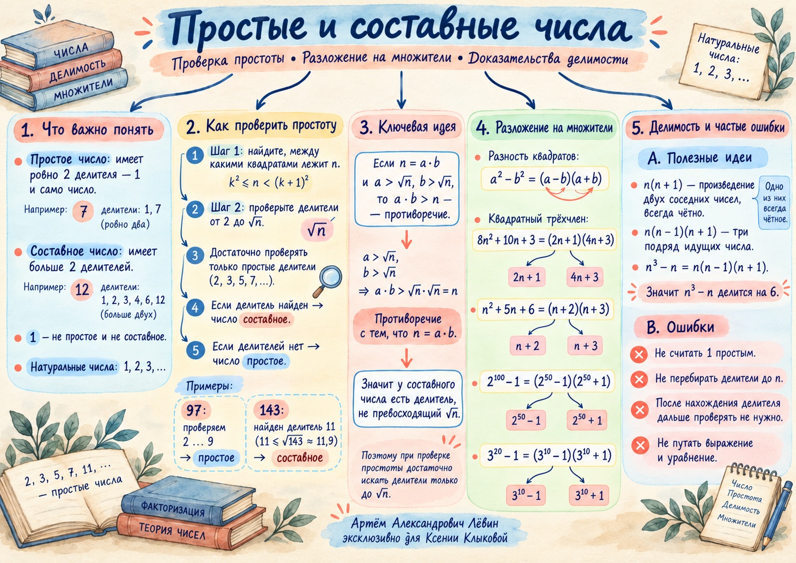

01 Сначала договоримся о числах
Натуральные числа: ℕ = {1, 2, 3, …}.
Простое число имеет ровно два различных натуральных делителя: 1 и само число. Например, 5.
Составное число можно представить произведением n = ab, где a, b ∈ ℕ и a > 1, b > 1. Например, 6 = 2 · 3.
Умеете ли Вы объяснить, почему единица исключена из обоих определений?
02 Почему хватит делителей до √n
Если составное число n = ab разложено на два натуральных множителя больше 1, то хотя бы один из них не превосходит √n. Иначе произведение двух множителей было бы больше n — противоречие.
- Определите целую часть √n — удобно сравнить n с соседними квадратами.
- Перечислите простые числа от 2 до √n.
- Проверьте делимость. Найденный делитель доказывает составность. Если ни одного нет, число простое.
- 97
- 9² < 97 < 10². Проверяем 2, 3, 5, 7. Делителей нет → простое.
- 143
- 11² < 143 < 12². Находим 143 = 11 · 13 → составное.
- 113
- В задаче о 113 фишках нельзя получить прямоугольник с двумя строками и двумя столбцами или более: 113 — простое число.
03 Разложение доказывает составность
Когда требуется доказать утверждение для любого натурального n, подстановка нескольких значений помогает искать закономерность, но общего доказательства не даёт.
Для каждого n ≥ 1 оба целых множителя больше 1: первый не меньше 3, второй не меньше 7. Значит, число составное при любом натуральном n.
Оба множителя снова больше 1. Доказательство работает сразу для всех n ∈ ℕ.
04 Большая степень — знакомая формула
Для любой натуральной степени k действует частный случай:
Поэтому число 2¹⁰⁰ − 1 составное:
Оба множителя натуральные и больше 1. Полное вычисление огромного числа не требуется.
Разность степеней
Здесь m ∈ ℕ, a — целое. При m = 1 сумма справа состоит из одного слагаемого 1.
05 Делимость через соседние числа
Среди любых двух последовательных целых чисел одно чётное. Среди любых трёх последовательных целых одно кратно 3 и хотя бы одно чётное.
Разложение даёт произведение трёх последовательных целых чисел, которое делится и на 2, и на 3, значит, делится на 6 при любом целом n.
Делимость 2⁴ⁿ − 1 на 15
Для всех натуральных n выражение в последних скобках целое. Множитель 15 доказывает искомую делимость.
06 Проверьте себя: Путь А
10 заданий от базового к более сложному. Ответы раскрываются отдельно после попытки самостоятельного решения.
- Распределите числа 1, 2, 9, 17, 25 на простые, составные и не относящиеся ни к одной группе.
Ответ
Простые: 2, 17. Составные: 9, 25. Число 1 — ни простое, ни составное. - Докажите, что 89 — простое число. Укажите проверяемые делители.
Контрольный шаг
√89 < 10. Проверяем 2, 3, 5, 7. Ни одно не делит 89. - Докажите, что 221 — составное число.
Ответ
221 = 13 · 17. - Можно ли расположить 127 одинаковых фишек прямоугольником с минимум двумя строками и двумя столбцами?
Ответ
Нет. 127 — простое: проверяем 2, 3, 5, 7, 11. - Докажите, что n² + 7n + 10 составное для каждого n ∈ ℕ.
Контрольный шаг
(n + 2)(n + 5); оба множителя больше 1. - Докажите, что 6n² + 11n + 3 составное для каждого n ∈ ℕ.
Контрольный шаг
(3n + 1)(2n + 3); оба множителя больше 1. - Докажите, что 5¹⁸ − 1 составное, не вычисляя его десятичную запись.
Контрольный шаг
(5⁹ − 1)(5⁹ + 1). - Докажите, что n³ − n делится на 6 при любом целом n.
Контрольный шаг
(n − 1)n(n + 1): три последовательных целых числа. - Докажите, что n⁵ − n делится на 6 при любом целом n.
Контрольный шаг
(n − 1)n(n + 1)(n² + 1). - Докажите, что 2⁴ⁿ − 1 делится на 15 для каждого n ∈ ℕ.
Контрольный шаг
2⁴ⁿ − 1 = 16ⁿ − 1 = 15(1 + 16 + … + 16ⁿ⁻¹).
07 Материалы занятия
Акварельная ментальная карта повторяет ключевые правила и примеры из чек-листа.

